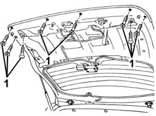
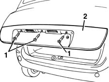
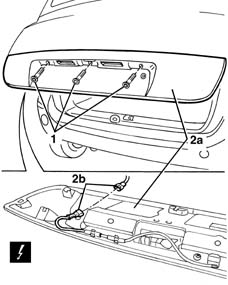

7055A54 NUMBERPLATE HOLDER - R+R
- Path
- Procedures > 70 FITTINGS > 7055 MOULDINGS ON PROTECTIONS > 7055A EXTERIOR MOULDINGS > 7055A54 NUMBERPLATE HOLDER - R+R
- Kind
- repair procedure (removal / refitting; the operation number is the code)
- Applies to
- all engines; all production periods
- Interactive page
- https://sloeber94.github.io/elrnDB-fMltpl/en/#/2892260
Applies to: all engines; production: fino a 05/99, da 06/99 a 03/02
 Removing
Removing
 Refitting
Refitting7015A04 tailgate interior panel - r+r
5540A94 l/h or r/h number plate light (one) - r+r
(right and left)
1. Undo the internal number plate holder bolts.

Applies to: all engines; production: fino a 05/99, da 06/99 a 03/02
1. Undo the external bolts.
2. Remove the number plate holder.

Applies to: all engines; production: fino a 05/99, da 06/99 a 03/02
Refitting
RemovingCheck that the number plate holder is undamaged.
Fit the number plate holder.
Tighten the external and internal bolts.
5540A94 l/h or r/h number plate light (one) - r+r
(right and left)
7015A04 tailgate interior panel - r+r
.
Applies to: all engines; production: da 09/03, da 04/02 a 08/03, da 06/04, fino a 05/04
Removing
Refitting7015A04 tailgate interior panel - r+r
5540A94 l/h or r/h number plate light (one) - r+r
(right and left)
1. Undo the internal number plate holder bolts.
Applies to: all engines; production: da 09/03, da 04/02 a 08/03, da 06/04, fino a 05/04
1. Undo the external bolts.
2. Remove the number plate holder (2a) after having disconnected the electrical connection (2b).
 | Name | Connector |
|---|---|---|
2b | Switch on boot outer handle |

Applies to: all engines; production: da 09/03, da 04/02 a 08/03, da 06/04, fino a 05/04
If necessary,
7015B60 EXTERIOR HANDLE for opening TAILGATE with switch for tailgate release - R.R.
Applies to: all engines; production: da 09/03, da 04/02 a 08/03, da 06/04, fino a 05/04
Refitting
RemovingCheck that the number plate holder is undamaged.
If necessary,
7015B60 EXTERIOR HANDLE for opening TAILGATE with switch for tailgate release - R.R.
Connect the electrical connection and position the number plate holder.
Tighten the external and internal bolts.
5540A94 l/h or r/h number plate light (one) - r+r
(right and left)
7015A04 tailgate interior panel - r+r
.
Topics linked from this page (4)
- 5540A94 l/h or r/h number plate light (one) - r+r
- 7015A04 tailgate interior panel - r+r
- 7015B60 EXTERIOR HANDLE for opening TAILGATE with switch for tailgate release - R.R.
- I33 Switch on boot outer handle